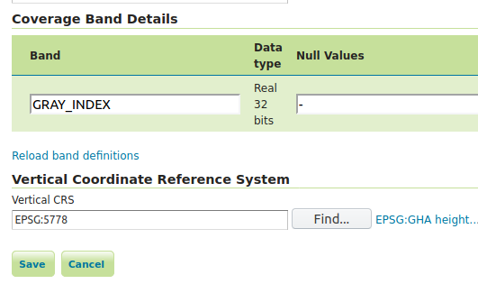

Raw data download processes¶
These processes allow download of vector and raster data in raw form, without rendering.
Download Estimator Process¶
The Download Estimator Process checks the size of the file to download. This process takes in input the following parameters:
layername: name of the layer to check
ROI: ROI object to use for cropping data
filter: filter for filtering input data
targetCRS: CRS of the final layer if reprojection is needed
This process will return a boolean which will be true if the downloaded file will not exceed the configured limits.
Download Process¶
The Download Process calls the Download Estimator Process, checks the file size, and, if the file does not exceed the limits, download the file as a zip. The parameters to set are
layerName: the name of the layer to process/download
filter: a vector filter for filtering input data(optional)
outputFormat: the MIME type of the format of the final file
targetCRS: the CRS of the output file (optional)
RoiCRS: Region Of Interest CRS (optional)
ROI: Region Of Interest object to use for cropping data (optional)
cropToROI: boolean parameter to allow cropping to actual ROI, or its envelope (optional)
interpolation: interpolation function to use when reprojecting / scaling raster data. Values are NEAREST (default), BILINEAR, BICUBIC2, BICUBIC (optional)
targetSizeX: size X in pixels of the output (optional, applies for raster input only)
targetSizeY: size Y in pixels of the output (optional, applies for raster input only)
selectedBands: a set of the band indices of the original raster that will be used for producing the final result (optional, applies for raster input only)
writeParameters: a set of writing parameters (optional, applies for raster input only). See Writing parameters below section for more details on writing parameters defintion.
minimizeReprojections: since 2.17, parameter to control CRS management when dealing with heterogeneous CRS’s coverages, in order to minimize reprojections when granules in ROI match the TargetCRS. See RasterDownload of Heterogeneous CRS ImageMosaic below section for more details on this param.
bestResolutionOnMatchingCRS: since 2.17, parameter to control CRS and resolution management when dealing with heterogeneous CRS’s coverages. See RasterDownload of Heterogeneous CRS ImageMosaic below section for more details on this param.
targetVerticalCRS: optional TargetVerticalCRS, to be used to transform elevation data from a VerticalCRS to another one. See Vertical data resampling on download below section for more details on this param
resolutionsDifferenceTolerance: the parameter allows to specify a tolerance value to control the use of native resolution of the data, when no target size has been specified and granules are reprojected. If
the percentage difference between original and reprojected coverages resolutions is below the specified tolerance value,
native resolution is the same for all the requested granules,
the unit of measure is the same for native and target CRS,
the reprojected coverage will be forced to use native resolutions. For example by specifying a value of 5.0, if the percentage difference between native and reprojected data is below 5%, assuming that also the other two conditions are respected, the native resolutions will be preserved. Default values is 0.
The targetCRS and RoiCRS parameters are using EPSG code terminology, so, valid parameters are literals like EPSG:4326 (if we are referring to a the Geogaphic WGS84 CRS), EPSG:3857 (for WGS84 Web Mercator CRS), etc.
ROI Definition¶
A ROI parameter is a geometry object which can also be defined if three different forms:
as
TEXT, in various geometry textual formats/representationsas
REFERENCE, which is the textual result of an HTTP GET/POST request to a specific urlas a
SUPPROCESSresult: the format produced as result of the process execution must be a compatible geometry textual format.
As noted above, in all above forms/cases ROI geometry is defined as text, in specific formats. These can be:
text/xml; subtype=gml/3.1.1: conforming to gml specs 3.1.1
text/xml; subtype=gml/2.1.2: conforming to gml specs 2.1.2
application/wkt: the WKT geometry representation
application/json: the JSON geometry representation
application/gml-3.1.1: conforming to gml specs 3.1.1
application/gml-2.1.2: conforming to gml specs 2.1.2
For example, a polygon used as ROI with the following WKT representation:
POLYGON (( 500116.08576537756 499994.25579707103, 500116.08576537756 500110.1012210889, 500286.2657688021 500110.1012210889, 500286.2657688021 499994.25579707103, 500116.08576537756 499994.25579707103 ))
would be represented in the following forms:
in application/wkt:
POLYGON (( 500116.08576537756 499994.25579707103, 500116.08576537756 500110.1012210889, 500286.2657688021 500110.1012210889, 500286.2657688021 499994.25579707103, 500116.08576537756 499994.25579707103 ))in application/json:
{"type":"Polygon","coordinates":[[[500116.0858,499994.2558],[500116.0858,500110.1012],[500286.2658,500110.1012],[500286.2658,499994.2558],[500116.0858,499994.2558]]]}in text/xml:
500116.08576537756,499994.25579707103 500116.08576537756,500110.1012210889 500286.2657688021,500110.1012210889 500286.2657688021,499994.25579707103 500116.08576537756,499994.25579707103in application/xml: the following xml
<?xml version="1.0" encoding="UTF-8"?><gml:Polygon xmlns:gml="http://www.opengis.net/gml" xmlns:xs="http://www.w3.org/2001/XMLSchema" xmlns:xlink="http://www.w3.org/1999/xlink"> <gml:outerBoundaryIs> <gml:LinearRing> <gml:coordinates>500116.08576537756,499994.25579707103 500116.08576537756,500110.1012210889 500286.2657688021,500110.1012210889 500286.2657688021,499994.25579707103 500116.08576537756,499994.25579707103</gml:coordinates> </gml:LinearRing> </gml:outerBoundaryIs> </gml:Polygon>
The general structure of a WPS Download request POST payload consists of two parts: the first (<wps:DataInputs>) contains the input parameters for the process, and the second (<wps:ResponseForm>) contains details about delivering the output. A typical pseudo payload is the following:
<?xml version="1.0" encoding="UTF-8"?><wps:Execute version="1.0.0" service="WPS" xmlns:xsi="http://www.w3.org/2001/XMLSchema-instance" xmlns="http://www.opengis.net/wps/1.0.0" xmlns:wfs="http://www.opengis.net/wfs" xmlns:wps="http://www.opengis.net/wps/1.0.0" xmlns:ows="http://www.opengis.net/ows/1.1" xmlns:gml="http://www.opengis.net/gml" xmlns:ogc="http://www.opengis.net/ogc" xmlns:wcs="http://www.opengis.net/wcs/1.1.1" xmlns:xlink="http://www.w3.org/1999/xlink" xsi:schemaLocation="http://www.opengis.net/wps/1.0.0 http://schemas.opengis.net/wps/1.0.0/wpsAll.xsd"> <ows:Identifier>gs:WPS_Process_Name_Here</ows:Identifier> <wps:DataInputs> <wps:Input> <ows:Identifier>First_Param_Name</ows:Identifier> <wps:Data> (First_Param_Data) </wps:Data> </wps:Input> ... ... </wps:DataInputs> <wps:ResponseForm> <wps:RawDataOutput mimeType="application/zip"> <ows:Identifier>result</ows:Identifier> </wps:RawDataOutput> </wps:ResponseForm> </wps:Execute>
Each parameter for the process is defined in its own <wps:Input> xml block. In case of simple type data, such as layerName, outputFormat, targetCRS, etc, input params xml blocks have the following form:
<wps:Input> <ows:Identifier>layerName</ows:Identifier> <wps:Data> <wps:LiteralData>nurc:Img_Sample</wps:LiteralData> </wps:Data> </wps:Input>
Note the <wps:LiteralData> tags wrapping the parameter value.
In case of geometry parameters, such as filter, ROI, the parameter’s <wps:Input> block is different:
<wps:Input> <ows:Identifier>ROI</ows:Identifier> <wps:Data> <wps:ComplexData mimeType="application/wkt"><![CDATA[POLYGON (( 500116.08576537756 499994.25579707103, 500116.08576537756 500110.1012210889, 500286.2657688021 500110.1012210889, 500286.2657688021 499994.25579707103, 500116.08576537756 499994.25579707103 ))]]></wps:ComplexData> </wps:Data> </wps:Input>
Note the <wps:ComplexData> tag, the mimeType="application/wkt" parameter, and the ![CDATA[] wrapping of the actual geometry data (in textual representation), according to the selected MIME type.
Note that if the ROI parameter is defined as WKT, you will need to specify a RoiCRS input parameter as well.
In case the ROI is defined using a REFERENCE source, the input block is slightly different:
<wps:Input> <ows:Identifier>ROI</ows:Identifier> <wps:Reference mimeType="application/wkt" xlink:href="url_to_fetch_data" method="GET"/> </wps:Input>
Note the <wps:Reference> tag replacing <wps:ComplexData> tag, and the extra xlink:href="url_to_fetch_data" parameter, which defines the url to peform the HTTP GET request. For POST request cases, tech method is switched to POST, and a <wps:Body> tag is used to wrap POST data:
<wps:Reference mimeType="application/wkt" xlink:href="url_to_fetch_data" method="POST"> <wps:Body><![CDATA[request_body_data]]></wps:Body> </wps:Reference>
Filter parameter definition¶
A filter parameter is a definition of a vector filter operation:
as
TEXT, in various textual formats/representationsas
REFERENCE, which is the textual result of an HTTP GET/POST request to a specific urlas a
SUBPROCESSresult: the format produced as result of the process execution must be a compatible geometry textual format.
Compatible text formats for filter definitions are:
text/xml; filter/1.0
text/xml; filter/1.1
text/xml; cql
For more details on filter formats/languages, one can see Supported filter languages and Filter functions.
Filter parameter applies to vector data. If this is the case with input data, a sample <wps:Input> block of a filter intersecting the polygon we used earlier as an example for ROI definition would be:
<wps:Input> <ows:Identifier>filter</ows:Identifier> <wps:Data> <wps:ComplexData mimeType="text/plain; subtype=cql"><![CDATA[<Intersects> <PropertyName>GEOMETRY</PropertyName> <gml:Polygon> <gml:outerBoundaryIs> <gml:LinearRing> <gml:coordinates>500116.08576537756,499994.25579707103 500116.08576537756,500110.1012210889 500286.2657688021,500110.1012210889 500286.2657688021,499994.25579707103 500116.08576537756,499994.25579707103</gml:coordinates> </gml:LinearRing> </gml:outerBoundaryIs> </gml:Polygon> </Intersects>]]></wps:ComplexData> </wps:Data> </wps:Input>
Sample request¶
Synchronous execution¶
The following is a sample WPS request for processing a raster dataset. Suppose we want to use the North America sample imagery (nurc:Img_Sample) layer, to produce an 80x80 pixels downloadable tiff in EPSG:4326
Assuming that a local geoserver instance (setup for wps/wps-download support) is running, we issue a POST request to the url:
http://127.0.0.1:8080/geoserver/ows?service=wps
using the following payload:
<?xml version="1.0" encoding="UTF-8"?><wps:Execute version="1.0.0" service="WPS" xmlns:xsi="http://www.w3.org/2001/XMLSchema-instance" xmlns="http://www.opengis.net/wps/1.0.0" xmlns:wfs="http://www.opengis.net/wfs" xmlns:wps="http://www.opengis.net/wps/1.0.0" xmlns:ows="http://www.opengis.net/ows/1.1" xmlns:gml="http://www.opengis.net/gml" xmlns:ogc="http://www.opengis.net/ogc" xmlns:wcs="http://www.opengis.net/wcs/1.1.1" xmlns:xlink="http://www.w3.org/1999/xlink" xsi:schemaLocation="http://www.opengis.net/wps/1.0.0 http://schemas.opengis.net/wps/1.0.0/wpsAll.xsd"> <ows:Identifier>gs:Download</ows:Identifier> <wps:DataInputs> <wps:Input> <ows:Identifier>layerName</ows:Identifier> <wps:Data> <wps:LiteralData>nurc:Img_Sample</wps:LiteralData> </wps:Data> </wps:Input> <wps:Input> <ows:Identifier>outputFormat</ows:Identifier> <wps:Data> <wps:LiteralData>image/tiff</wps:LiteralData> </wps:Data> </wps:Input> <wps:Input> <ows:Identifier>targetCRS</ows:Identifier> <wps:Data> <wps:LiteralData>EPSG:4326</wps:LiteralData> </wps:Data> </wps:Input> <wps:Input> <ows:Identifier>targetSizeX</ows:Identifier> <wps:Data> <wps:LiteralData>80</wps:LiteralData> </wps:Data> </wps:Input> <wps:Input> <ows:Identifier>targetSizeY</ows:Identifier> <wps:Data> <wps:LiteralData>80</wps:LiteralData> </wps:Data> </wps:Input> </wps:DataInputs> <wps:ResponseForm> <wps:RawDataOutput mimeType="application/zip"> <ows:Identifier>result</ows:Identifier> </wps:RawDataOutput> </wps:ResponseForm> </wps:Execute>
More parameters (from the parameter list above) can be used, for example, we can only select bands 0 and 2 from the original raster:
<wps:Input> <ows:Identifier>bandIndices</ows:Identifier> <wps:Data> <wps:LiteralData>0</wps:LiteralData> </wps:Data> </wps:Input> <wps:Input> <ows:Identifier>bandIndices</ows:Identifier> <wps:Data> <wps:LiteralData>2</wps:LiteralData> </wps:Data> </wps:Input>
Or, use a Region Of Interest to crop the dataset:
<wps:Input> <ows:Identifier>ROI</ows:Identifier> <wps:Data> <wps:ComplexData mimeType="application/wkt"><![CDATA["POLYGON (( 500116.08576537756 499994.25579707103, 500116.08576537756 500110.1012210889, 500286.2657688021 500110.1012210889, 500286.2657688021 499994.25579707103, 500116.08576537756 499994.25579707103 ))]]></wps:ComplexData> </wps:Data> </wps:Input> <wps:Input> <ows:Identifier>RoiCRS</ows:Identifier> <wps:Data> <wps:LiteralData>EPSG:32615</wps:LiteralData> </wps:Data> </wps:Input>
The result produced is a zipped file to download.
Asynchronous execution¶
The process can also be performed asynchronously.
In this case, the second part (wps:ResponseForm) of the wps download payload slightly changes, by using the storeExecuteResponse and status parameters, set to true for the <wps:ResponseDocument>:
<wps:ResponseForm> <wps:ResponseDocument storeExecuteResponse="true" status="true"> <wps:RawDataOutput mimeType="application/zip"> <ows:Identifier>result</ows:Identifier> </wps:RawDataOutput> </wps:ResponseDocument>> </wps:ResponseForm>
In case of asynchronous execution, the initial request to download data returns an xml indication that the process has successfully started:
<?xml version="1.0" encoding="UTF-8"?><wps:ExecuteResponse xmlns:xs="http://www.w3.org/2001/XMLSchema" xmlns:ows="http://www.opengis.net/ows/1.1" xmlns:wps="http://www.opengis.net/wps/1.0.0" xmlns:xlink="http://www.w3.org/1999/xlink" xml:lang="en" service="WPS" serviceInstance="http://127.0.0.1:8080/geoserver/ows?" statusLocation="http://127.0.0.1:8080/geoserver/ows?service=WPS&version=1.0.0&request=GetExecutionStatus&executionId=dd0d61f5-7da3-41ed-bd3f-15311fa660ba" version="1.0.0"> <wps:Process wps:processVersion="1.0.0"> <ows:Identifier>gs:Download</ows:Identifier> <ows:Title>Enterprise Download Process</ows:Title> <ows:Abstract>Downloads Layer Stream and provides a ZIP.</ows:Abstract> </wps:Process> <wps:Status creationTime="2016-08-08T11:03:18.167Z"> <wps:ProcessAccepted>Process accepted.</wps:ProcessAccepted> </wps:Status> </wps:ExecuteResponse>
The response contains a <wps:Status> block indicating successfull process creation and process start time. However, the important part in this response is the executionId=dd0d61f5-7da3-41ed-bd3f-15311fa660ba attribute in the <wps:ExecuteResponse> tag. The dd0d61f5-7da3-41ed-bd3f-15311fa660ba ID can be used as a reference for this process, in order to issue new GET requests and to check process status. These requests have the form:
http://127.0.0.1:8080/geoserver/ows?service=WPS&request=GetExecutionStatus&executionId=277e24eb-365d-42e1-8329-44b8076d4fc0
When issued (and process has finished on the server), this GET request returns the result to download/process as a base64 encoded zip:
<?xml version="1.0" encoding="UTF-8"?> <wps:ExecuteResponse xmlns:xs="http://www.w3.org/2001/XMLSchema" xmlns:ows="http://www.opengis.net/ows/1.1" xmlns:wps="http://www.opengis.net/wps/1.0.0" xmlns:xlink="http://www.w3.org/1999/xlink" xml:lang="en" service="WPS" serviceInstance="http://127.0.0.1:8080/geoserver/ows?" statusLocation="http://127.0.0.1:8080/geoserver/ows?service=WPS&version=1.0.0&request=GetExecutionStatus&executionId=0c596a4d-7ddb-4a4e-bf35-4a64b47ee0d3" version="1.0.0"> <wps:Process wps:processVersion="1.0.0"> <ows:Identifier>gs:Download</ows:Identifier> <ows:Title>Enterprise Download Process</ows:Title> <ows:Abstract>Downloads Layer Stream and provides a ZIP.</ows:Abstract> </wps:Process> <wps:Status creationTime="2016-08-08T11:18:46.015Z"> <wps:ProcessSucceeded>Process succeeded.</wps:ProcessSucceeded> </wps:Status> <wps:ProcessOutputs> <wps:Output> <ows:Identifier>result</ows:Identifier> <ows:Title>Zipped output files to download</ows:Title> <wps:Data> <wps:ComplexData encoding="base64" mimeType="application/zip">UEsDBBQACAgIAFdyCEkAAAAAAAAAAAAAAAApAAAAMGEwYmJkYmQtMjdkNi00...(more zipped raster data following, ommited for space saving)...</wps:ComplexData> </wps:Data> </wps:Output> </wps:ProcessOutputs> </wps:ExecuteResponse>
Asynchronous execution (output as a reference)¶
The <wps:ResponseForm> of the previous asynchronous request payload example can be modified to get back a link to the file to be downloaded instead of the base64 encoded data.
... <wps:ResponseForm> <wps:ResponseDocument storeExecuteResponse="true" status="true"> <wps:Output asReference="true" mimeType="application/zip"> <ows:Identifier>result</ows:Identifier> </wps:Output> </wps:ResponseDocument> </wps:ResponseForm>
Note <wps:ResponseDocument> contains a <wps:Output> instead of a <wps:RawDataOutput> being used by previous example.
Moreover the attribute asReference set to true has been added to the <wps:Output>.
This time, when issued (and process has finished on the server), the GET request returns the result to download as a link as part of <wps:Output><wps:Reference> .
<?xml version="1.0" encoding="UTF-8"?> <wps:ExecuteResponse xmlns:xs="http://www.w3.org/2001/XMLSchema" xmlns:ows="http://www.opengis.net/ows/1.1" xmlns:wps="http://www.opengis.net/wps/1.0.0" xmlns:xlink="http://www.w3.org/1999/xlink" xml:lang="en" service="WPS" serviceInstance="http://127.0.0.1:8080/geoserver/ows?" statusLocation="http://127.0.0.1:8080/geoserver/ows?service=WPS&version=1.0.0&request=GetExecutionStatus&executionId=c1074100-446a-4963-94ad-cbbf8b8a7fd1" version="1.0.0"> <wps:Process wps:processVersion="1.0.0"> <ows:Identifier>gs:Download</ows:Identifier> <ows:Title>Enterprise Download Process</ows:Title> <ows:Abstract>Downloads Layer Stream and provides a ZIP.</ows:Abstract> </wps:Process> <wps:Status creationTime="2016-08-08T11:38:34.024Z"> <wps:ProcessSucceeded>Process succeeded.</wps:ProcessSucceeded> </wps:Status> <wps:ProcessOutputs> <wps:Output> <ows:Identifier>result</ows:Identifier> <ows:Title>Zipped output files to download</ows:Title> <wps:Reference href="http://127.0.0.1:8080/geoserver/ows?service=WPS&version=1.0.0&request=GetExecutionResult&executionId=c1074100-446a-4963-94ad-cbbf8b8a7fd1&outputId=result.zip&mimetype=application%2Fzip" mimeType="application/zip" /> </wps:Output> </wps:ProcessOutputs> </wps:ExecuteResponse>
Raster Output Format and Response mime-type¶
By default, the Downloaded raster gets zipped, along with the SLD style associated to the layer.
In some cases, this can be unnecessary, especially if the output TIFF already has some type of internal compression or if we simply want to get back the TIFF output file without the ancillary SLD. Let’s consider downloading a RGB TIFF: the default raster.sld style won’t add anything useful to the output. In that case it’s possible to specify image/tiff in the Response’s output mimeType: the output TIFF will be provided as is, without extra steps of compression and file management.
... <wps:ResponseForm> <wps:ResponseDocument storeExecuteResponse="true" status="true"> <wps:Output asReference="true" mimeType="image/tiff"> <ows:Identifier>result</ows:Identifier> </wps:Output> </wps:ResponseDocument> </wps:ResponseForm>
Writing buffering options¶
By default raster pixels are encoded using a file stream writing through a default 16KB data buffer.
Depending on the network and disk setup, you might want to change the size of the buffer to improve performance. This can be done by adding this property to the JAVA_OPTS: -Dorg.geoserver.wps.download.raster.buffer.size=sizeinbytes where sizeinbytes is the actual value to be set, i.e. 1048576 to set a 1MB buffer.
Moreover, when copying back data resources from within the WPS machinery to the final file output location, a default 16KB data buffer is being used.
It’s also possible to change the size of such buffer by adding this property to the JAVA_OPTS: -Dorg.geoserver.wps.copy.buffer.size=sizeinbytes where sizeinbytes is the actual value to be set, i.e. 1048576 to set a 1MB buffer.
Writing parameters¶
The writeParameters input element of a process execution allows to specify parameters to be applied by the outputFormat encoder when producing the output file.
Writing parameters are listed as multiple <dwn:Parameter key="writingParameterName">value</dwn:Parameter> within a <dwn:Parameters> parent element.
See the below xml containing full syntax of a valid example for TIFF output format:
<wps:Input>
<ows:Identifier>writeParameters</ows:Identifier>
<wps:Data>
<wps:ComplexData xmlns:dwn="http://geoserver.org/wps/download">
<dwn:Parameters>
<dwn:Parameter key="tilewidth">128</dwn:Parameter>
<dwn:Parameter key="tileheight">128</dwn:Parameter>
<dwn:Parameter key="compression">JPEG</dwn:Parameter>
<dwn:Parameter key="quality">0.75</dwn:Parameter>
</dwn:Parameters>
</wps:ComplexData>
</wps:Data>
</wps:Input>
GeoTIFF/TIFF supported writing parameters¶
The supported writing parameters are:
tilewidth: Width of internal tiles, in pixels
tileheight: Height of internal tiles, in pixels
compression: Compression type used to store internal tiles. Supported values are:
CCITT RLE(Lossless) (Huffman)
LZW(Lossless)
JPEG(Lossy)
ZLib(Lossless)
PackBits(Lossless)
Deflate(Lossless)
quality: Compression quality. Value is in the range [0 : 1]
for
JPEGlossy compression, 0 is for worst quality/higher compression and 1 is for best quality/lower compression. (default is 1).for
Deflatelossless compression, input value in the range [0 : 1] is linearly mapped to output deflate level in the range [1 : 9]:(deflate level = 1 + 8 * (quality)), where level 1 is for best speed and level 9 is for best compression. (default level is 9)
writenodata: Supported value is one of true/false. Note that, by default, a nodata TAG is produced as part of the output GeoTIFF file as soon as a nodata is found in the GridCoverage2D to be written. Therefore, not specifying this parameter will result into writing nodata to preserve default behavior. Setting it to false will avoid writing that TAG.
RasterDownload of Heterogeneous CRS ImageMosaic¶
An ImageMosaic made of granules in different coordinate reference systems (i.e. several DEM files in different UTM zones) is defined as ImageMosaic with Heterogeneous CRS. The ImageMosaic layer will expose a common CRS as the native one (i.e. 4326).
By default, mosaicking granules with different CRSs will result into a reprojection from the original CRS of the granules to that common CRS.
Since 2.17, a new parameter has been defined: minimizeReprojections
It will be used on Raster Download with a defined ROI and a TargetCRS being specified. When set to true, any Granule in the ROI having a nativeCRS matching the TargetCRS will not be affected by reprojection.
Since 2.17, a new parameter has been defined: bestResolutionOnMatchingCRS
It will be used when minimizeReprojections is enabled too, on Raster Download with a defined ROI and a TargetCRS, without target size being specified.
When set to true, the download will aim to preserve the native properties of the underlying granules matching the targetCRS, as much as possible.
Back to the example, a RasterDownload specifying UTM32N as TargetCRS and a ROI covering an area containing UTM32N granules will result into getting those UTM32N granules without applying any intermediate reprojection, also providing back best raw resolution available for that CRS. So, if the ImageMosaic is a mix of UTM32N DEMs at 10 km resolution and UTM33N at 100 m resolution, the underlying reading request will use 10 km resolution, being the best resolution available in the targetCRS. When no granules are matching the targetCRS, the best resolution is taken from all the granules.
Make sure to configure the ImageMosaic’s index to contain both crs and resolution attributes, in order to preserve as much as possible the native properties of the granules.
A typical indexer.properties of such ImageMosaic will look like this:
GranuleAcceptors=org.geotools.gce.imagemosaic.acceptors.HeterogeneousCRSAcceptorFactory
GranuleHandler=org.geotools.gce.imagemosaic.granulehandler.ReprojectingGranuleHandlerFactory
HeterogeneousCRS=true
MosaicCRS=EPSG\:XXXX
Schema=*the_geom:Polygon,location:String,crs:String,resX:double,resY:double
ResolutionXAttribute=resX
ResolutionYAttribute=resY
CrsAttribute=crs
PropertyCollectors=CRSExtractorSPI(crs),ResolutionXExtractorSPI(resX),ResolutionYExtractorSPI(resY)
Vertical data resampling on download¶
Coverages containing elevations data (i.e. DTM/DEM/DSM) have pixel values representing elevations/heights referred to a specific VerticalCRS.
The associated VerticalCRS can be specified in the layer configuration, at the very bottom of the page, where a new optional Vertical Coordinate Reference System section shows up.
The following example shows a DSM layer being configured to specify EPSG:5778 as adopted VerticalCRS.

This section will only show up if:
The wps-download module has been deployed in GeoServer
The underlying data is single-band and datatype is at least 16 bit. (i.e.: no Byte datatype, no RGB images, …)
WPS Download - Vertical resampling¶
Resampling the data to a different VerticalCRS as part of the Raster Download Process is possible by specifying the targetVerticalCRS parameter in the WPS Download request. For example:
<wps:Input>
<ows:Identifier>targetVerticalCRS</ows:Identifier>
<wps:Data>
<wps:LiteralData>EPSG:9274</wps:LiteralData>
</wps:Data>
</wps:Input>
Note
An exception will be thrown when specifying a targetVerticalCRS but no source VerticalCRS has been assigned to the requested layer through the above setting.
Custom VerticalCRS definitions and grid transformations¶
Custom verticalCRS definitions can be specified in GeoServer via properties file as any other Coordinate Reference System, as explained in Custom CRS Definitions page.
This is an example of the above VerticalCRS being added as a WKT in the user_projections/epsg.properties file:
9274=VERT_CS["EVRF2000 Austria height", \
VERT_DATUM["European Vertical Reference Frame 2000 Austria", \
2000, AUTHORITY["EPSG","1261"]], \
AXIS["gravity-related height (H)",up], \
UNIT["m",1.0], \
AUTHORITY["EPSG","9274"]]
Transformations between VerticalCRSs can be supported through Vertical Grid Offset files (similarly to how NTV2 Grid Shift can be used in support of 2D grid transformation).
Custom Coordinate Operations are defined in user_projections/epsg_operations.properties file within the data directory (create it if it doesn’t exist).
Each line in epsg_operations.properties will describe a coordinate operation consisting of a source CRS, a target CRS, and a math transform with its parameter values. Use the following syntax:
<source crs code>,<target crs code>=<WKT math transform>
The Math Transform is a Vertical Offset by Grid Interpolation requiring 2 parameters:
A
Vertical offset filereferring an offset file containing a vertical offset for each pixel of the grid. The referred file need to be available in theuser_projectionsdirectory,An
Interpolation CRS codecontaining the EPSG code of the 2D CoordinateReferenceSystem of the grid file.
Example¶
Custom Vertical Grid Shift file for the transformation between the above Vertical CRSs
5778,9274=PARAM_MT["Vertical Offset by Grid Interpolation", \
PARAMETER["Vertical offset file", "GV_Hoehengrid_V1.tif"], \
PARAMETER["Interpolation CRS code", 4312]]
Note
Only GeoTIFF vertical offset files are supported at the moment. Vertical resampling will access pixels from that GeoTIFF using tiled loading. Therefore, make sure that the grid file is not striped (a gdalinfo call reporting Band 1 Block = NNN x 1 means a striped file. In that case, consider retiling it for better access before using it as a Vertical Offset File)